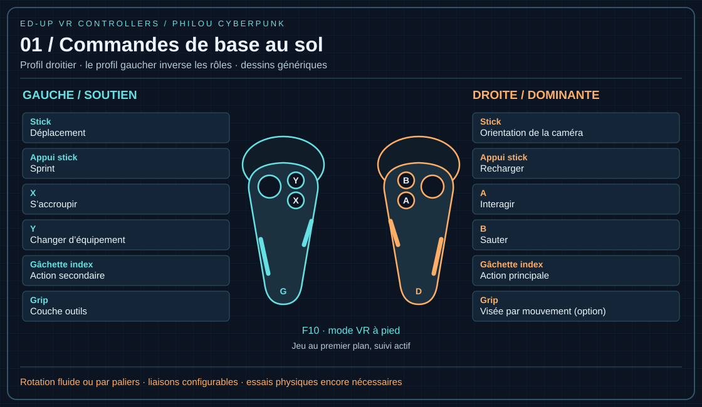
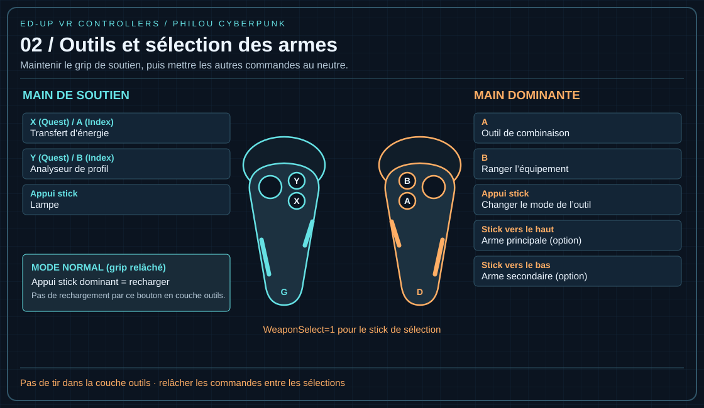
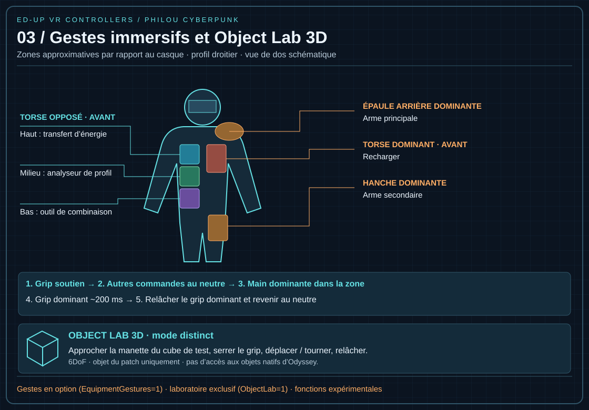

01 / MOVE
Déplacements
Marche, sprint, saut, accroupissement, orientation fluide ou par paliers. Profils gaucher et droitier.
Code expérimentalTransformer les déplacements à pied, la sélection d’équipements et les interactions dans Elite Dangerous: Odyssey avec les manettes de réalité virtuelle. Un projet expérimental fondé sur OpenXR et ED Unofficial Patch.
Windows x64 · gratuit · ZIP de diagnostic, pas un installateur complet du jeu.
Marche, sprint, saut, accroupissement, orientation fluide ou par paliers. Profils gaucher et droitier.
Code expérimentalSélection manuelle par boutons ou gestes vers des zones virtuelles de hanche, épaule et torse.
Code expérimentalContrôle relatif de caméra avec les manettes, visée à deux mains expérimentale et vibrations facultatives.
Code expérimentalReprésentation filaire stéréoscopique et pointeur visuel. Pas de squelette natif ni d'occlusion par le décor.
PrototypePrise, déplacement et rotation 6DoF d'un cube créé par le patch. Mode exclusif, sans commandes jeu.
Prototype indépendantConfiguration locale des touches, zones de gestes et diagnostics SteamVR / OpenXR. Installation et désinstallation automatiques des outils.
Installateur testé en CI| Action | Commande |
|---|---|
| Se déplacer | Stick gauche |
| Orienter la caméra | Stick droit |
| Interagir / sauter | A / B à droite |
| Sélection d'équipement | Grip gauche + bouton ou stick droit |
| Gestes immersifs (option) | Grip de soutien puis grip dominant dans une zone |
| Recharger | Appui sur stick droit |
Commandes configurables, liaisons du jeu à reproduire. Les profils gauchers inversent les rôles.
| Matériel / runtime | État |
|---|---|
| Meta Quest Touch / Touch Plus | Profils intégrés |
| Valve Index | Profil expérimental |
| SteamVR / Meta OpenXR | Diagnostic intégré |
| Virtual Desktop VDXR | Identification indicative |
| HTC Vive / Pico | À développer |
Aucune validation physique de ces contrôleurs n'est revendiquée. Windows x64 ciblé.
Profil droitier : la main gauche est celle de soutien. Le profil gaucher inverse les rôles. Cliquez sur un schéma pour l’ouvrir en grand.



Schémas vectoriels explicatifs, pas des captures du jeu. Profils Quest / Valve Index : A et B remplacent les boutons X et Y sur la manette Index de soutien. Les fonctions en option nécessitent leur activation et des liaisons correspondantes dans Odyssey. Compatibilité matérielle à valider.
Visual guide: right-handed layout, tool layer, equipment gestures and the standalone 3D object lab. Left-handed profile swaps controller roles; hardware validation remains pending.
Schéma du menu numéroté (aperçu, pas une capture en jeu).
Activer RadialMenu=1 et ToolLayer=1. Maintenir le grip de soutien, orienter le stick dominant, maintenir le secteur 120 ms et appuyer sur A dominant pour confirmer. Revenir au neutre ; relâcher le grip de soutien pour annuler.
Option désactivée par défaut. Remplace la sélection d’armes par stick seul. Rendu stéréoscopique filaire expérimental : ne pas utiliser si le menu n’est pas visible. Pas de lecture de l’inventaire natif. Installateur de diagnostic v0.9.16 validé ; patch intégré et tests sur casque non confirmés. Prototype au poignet v0.9.17 ci-dessous.
Schéma conceptuel : menu attaché à la manette, pas une capture du jeu.
Activer WristMenu=1 et ToolLayer=1. Le menu reprend les huit secteurs du menu radial et les place au-dessus de la manette de soutien.
Maintenir le grip de soutien, placer la manette devant le casque, orienter le stick dominant et confirmer avec A après 120 ms. Revenir au neutre. La perte de suivi ou une position hors zone annule la sélection.
Option expérimentale désactivée par défaut. Pas de suivi anatomique du poignet, de toucher direct ni d’accès à l’inventaire natif. 15 tests automatisés et installateur diagnostic v0.9.17 validés ; essais VR non confirmés. Ne pas utiliser si le menu n’est pas visible.
Installateur Windows x64 avec visualiseur de démonstration, configuration et diagnostic. Compilation et installation/désinstallation automatisées réussies.
Connexion GitHub requise · expire le 11 décembre 2026. Compilations récentes
Programme non signé. Python 3.10+ et Tkinter nécessaires pour le panneau facultatif.
v0.9.14 : compilation de référence et intégrée réussies. v0.9.15 : compilation de référence et intégrée réussies. Les binaires bruts ne constituent pas un installateur complet.
N'installez pas de DLL isolées. Le test réel dans Odyssey reste à réaliser. Notice complète FR · EN
Prototype non signé, VR uniquement. Pas de mise à jour automatique, pas de mode plat ni EDHM. Le jeu doit être fermé ; aucun écrasement de patch existant.
Sources de l'installateur et tests sur dossier fictif publiés. Le pipeline doit valider le packaging amont, les empreintes, l'installation et la restauration, puis compiler l'assistant Windows. Aucun téléchargement complet n'est annoncé avant vérification des résultats.
Essais en jeu et validation Quest 3 / SteamVR toujours nécessaires.
Profils OpenXR, déplacements, gestes, laboratoire 3D, tests automatisés et diagnostic Windows.
Stabilité, latence, essais Quest 3 et SteamVR, emballage complet avec sauvegarde et restauration.
Menu radial v0.9.16 (installateur de diagnostic validé), prototype au poignet v0.9.17 en validation, collisions dans le laboratoire à développer. Interaction native uniquement si une interface moteur autorisée est disponible.
Les retours des joueurs VR sont essentiels : précisez le casque, le runtime, la version et les étapes de reproduction. Ne publiez pas de données personnelles dans les rapports.
Basé sur ED Unofficial Patch. Projet indépendant, non affilié à Frontier Developments.
ED-UP VR Controllers is a free, experimental community extension of ED Unofficial Patch targeting Windows x64, OpenXR, Quest and SteamVR. It adds configurable motion controls, equipment selection gestures, wireframe hands and a six-degree-of-freedom virtual object laboratory.
v0.9.17 diagnostic installer passed automated Windows installation tests. It does not install the game patch. v0.9.14 integrated Windows proof passed; v0.9.15 integrated Windows proof also passed; real headset gameplay remains unverified.
Download test toolsGitHub sign-in required. Expires December 11, 2026.
Physical headset validation, reliable full installer, controller calibration, radial and wrist menus. Native game object manipulation is not implemented. Object Lab uses its own virtual cube, not Odyssey inventory or physics.
Full English guide · Feedback